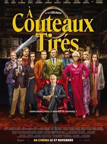

Festival des films en plein air du 5 au 8 aout au parc Monceau à Paris
Voici une séléction des 3 meilleurs films qui seront mis en avant pendant le festival
De Gaulle
Mai 1940. La guerre s'intensifie, l'armée française s'effondre, les Allemands seront bientôt à Paris. La panique gagne le gouvernement qui envisage d'accepter la défaite. Un homme, Charles de Gaulle, fraîchement promu général, veut infléchir le cours de l'Histoire.
Falling-inn-love
Gabriela, une citadine, participe au concours 'Win An Inn'. Elle se retrouve propriétaire d'une maison en ruine qu'il faut réparer. La jeune femme doit collaborer avec le charmant mais détestable entrepreneur local.

A couteaux-tirés
Célèbre auteur de polars, Harlan Thrombey est retrouvé mort dans sa somptueuse propriété, le soir de ses 85 ans. L'esprit affûté et la mine débonnaire, le détective Benoît Blanc est alors engagé par un commanditaire anonyme afin d'élucider l'affaire.